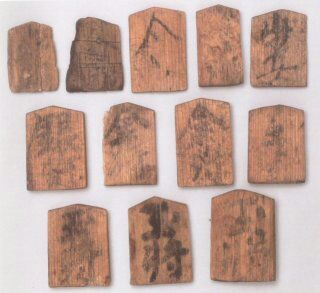

En 1993 en el templo Kōfuku-ji se encontraron piezas de shogi enterradas con un mokkan que tiene escrito: "6to año de la era Tengi" (Cazaux 152).
Otro mokkan encontrado en el oeste de Japón, en la isla Kyushu, menciona el carruaje de incienso, caballo y peón. Indicando que el shogi ya estaba bien extendido por las islas y mostraba una similitud sorprendente al shogi actual (152).
En 2013, cerca del 1er sitio 4 piezas mas fueron encontradas pero una era un Elefante Borracho sin reverso. Esta aparicion tempra del Elefante es intrigante porque el Chu-Shogi no vino hasta años despues (152).
Noble matematico de la corte Heian y autor de los 1ros textos del shogi: Shochureki y Kaichureki 1127 (Osada 6). Desgraciadamente solo parte del 1ro sobrevivio (Cazaux 152).
Encyclopedia de 13 volumenes con los 2 textos perdidos. El Nichureki describe 2 shogis diferentes. Uno chico, el Heian-Shogi con las piezas y moviemientos modernos pero sin torre y alfil. Tambien las piezas promueven a oro en las 3 lineas del oponente. Como los demas ajedrezes antiguos tambien se gana si al oponente solo le queda su rey. El tamaño del tablero y numero de piezas son desconocidos (152).
Fujiwara no Yorinaga tutor del principe y sadaijin (161).
"平安将棋の駒はチャトランガの駒（将・象・馬・車・兵）をよく残していて、上に仏教の五宝を示すといわれる玉・金・銀・桂・香の文字を重ねたものとする説もあります。"
(153)
Cazaux, Jean-Louis and Rick Knowlton. A World of Chess. McFarland & Company, Inc., Publishers, 2017.
Osada, Naoki. [About the Mathematician Miyoshi no Tameyasu]. Tokyo Woman's Christian University, 2020. PDF file.
Kokushi Daijiten 国史大辞典